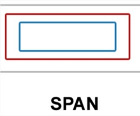
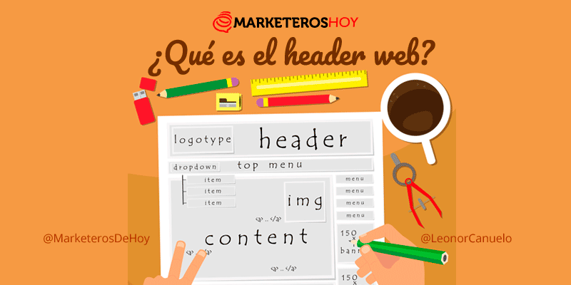
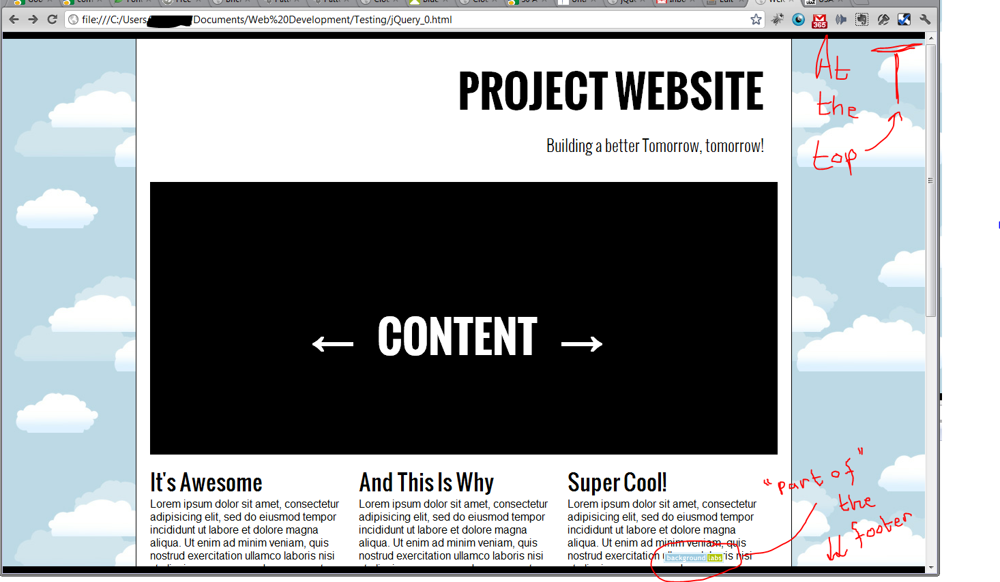
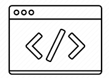
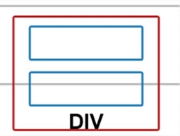

Flash cards

HTML
El Lenguaje de Marcado de Hipertexto (HTML) es el código que se utiliza para estructurar y desplegar una página web y sus contenidos. Por ejemplo, sus contenidos podrían ser párrafos, una lista con viñetas, o imágenes y tablas de datos.

CSS
CSS, en español «Hojas de estilo en cascada», es un lenguaje de diseño gráfico para definir y crear la presentación de un documento estructurado escrito en un lenguaje de marcado.

NEOCITIES
Neocities es un servicio de alojamiento web comercial para páginas estáticas. Ofrece 1 GB de espacio de almacenamiento para sitios gratuitos y sin secuencias de comandos del lado del servidor para suscripciones pagas y gratuitas.

JAVASCRIPT
Es un lenguaje de programación interpretado, dialecto del estándar ECMAScript. Se define como orientado a objetos, basado en prototipos, imperativo, débilmente tipado y dinámico.

GITHUB
GitHub es una forja para alojar proyectos utilizando el sistema de control de versiones Git. Se utiliza principalmente para la creación de código fuente de programas de ordenador.

BODY
El elemento "body"de HTML representa el contenido de un documento HTML. Solo puede haber un elemento "body" en un documento.

SPAN
Es un contenedor en línea. Sirve para aplicar estilo al texto o agrupar elementos en línea.
HEADER
El elemento de HTML Header representa un grupo de ayudas introductorias o de navegación. Puede contener algunos elementos de encabezado, logos , un formulario de búsqueda, un nombre de autor y otros.
VSCODE
Visual Studio Code es un editor de código fuente desarrollado por Microsoft para Windows, Linux, macOS y Web..

CONTAINER
Las capas o contenedores son unos recuadros o espacios rectangulares que pueden colocarse en cualquier parte de la página. En ellas, podemos insertar contenido HTML.
STYLE
Es el elemento encargado de indicar la información de estilo.
LANG
Información sobre el idioma del contenido del elemento y del valor de sus atributos..
PAGINAWEB
Conjunto de información que se encuentra en una dirección determinada de internet.

FRONTEND
consiste en la conversión de datos en una interfaz gráfica para que el usuario pueda ver e interactuar con la información de forma digital usando HTML, CSS y JavaScript
BACKEND
El backend es la parte del desarrollo web que se encarga de que toda la lógica de una página web funcione.

ARTICLE
Se usa más comúnmente para contener información que puede distribuirse independientemente del resto del sitio o la aplicación en la que aparece.
SECTION
El elemento section es un elemento de seccionamiento genérico, diseñado para contener una parte de un documento temáticamente definida
HIPERTEXTO
"Hipertexto" hace referencia a los enlaces que conectan páginas web entre sí, ya sea dentro de un único sitio web o entre sitios web. Los enlaces son un aspecto fundamental de la Web.20

LINK
Especifica la relación entre el documento actual y un recurso externo. Los usos posibles de este elemento incluyen la definición de un marco relacional para navegación.

DIV
Sirve para crear secciones o agrupar contenidos
